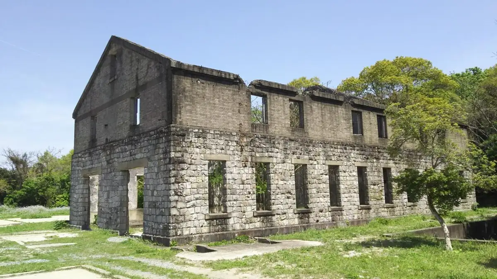
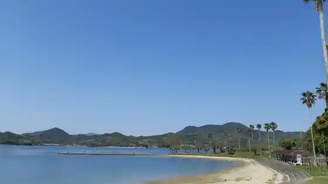
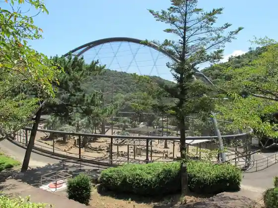
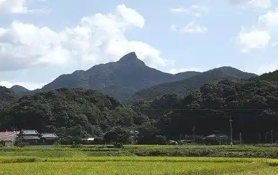
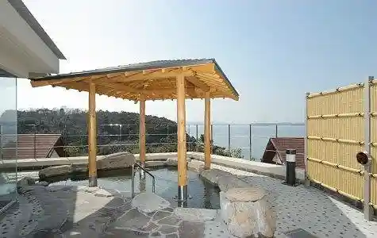

Kawatana, Nagasaki
Kawatana · Nagasaki
Kawatana
Highlighted on the Nagasaki map.

Sights
Gyorai Hassha Shikenjo Ato
Osaki Beach (Kawatana)

Osaki Nature Park Kujaku Sono

Kokuzo Yama (Kokuzozan)

Kawatana Osaki Onsen Shiosai Baths
